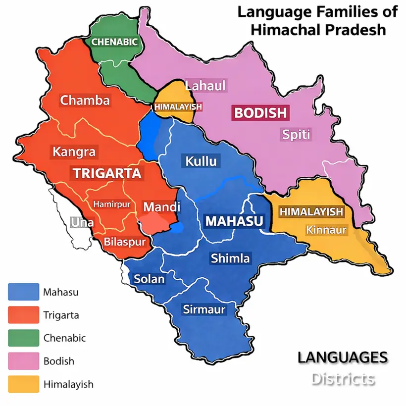
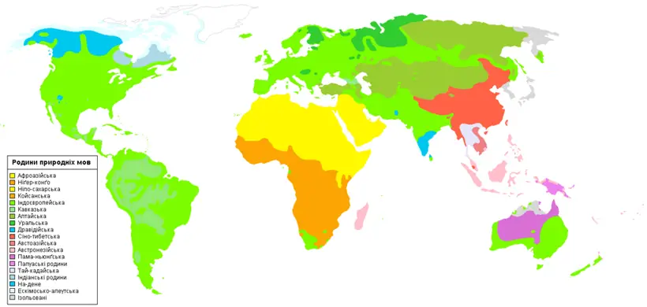
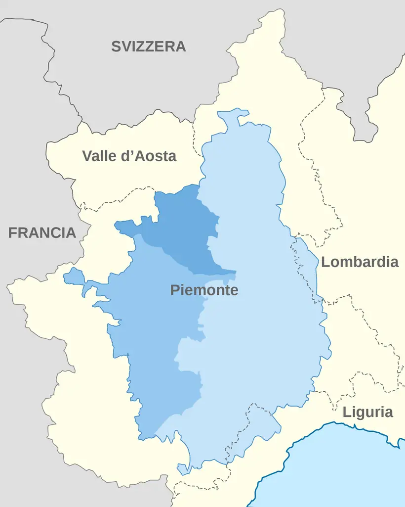

The claim
The Sapir–Whorf hypothesis holds that language shapes thought. The strong form — that you cannot think what you cannot say — has been rejected: people without colour terms can discriminate colours, and translation works. The weak form — that language influences attention, memory and categorisation — has experimental support.
Maps, diagrams and images






The evidence
Colour: speakers of languages with a single term for blue and green show different patterns in discrimination tasks, though the effect is small and depends on the task. Space: languages that use absolute directions (north/south) rather than relative ones (left/right) produce speakers who track orientation differently. Time: languages that describe time vertically or horizontally produce different gesture patterns and different performance on temporal tasks.
The effects are real, replicated in several cases, and modest. They are effects of attention and habit, not of the boundaries of thought.
Rejected: the strong form — language as a limit on thought.
Supported: small effects of language on attention, memory and categorisation.
Contested: the size of the effects and their generality.
Not supported: the claim that a language makes some thoughts impossible.
The honest label: live debate — with the interesting action in the weak version.
Why it is in the archive
Because it is the most quoted idea in the humanities and the most overquoted in popular science, and because the corrected version — language nudges thought — is both true and less exciting.
Open resources on this topic
- BookLinguistic relativity in SLA : thinking for speaking — 2010 (Internet Archive, free to read)
- BookTHE DIRECTIVE LESS-DIRECTIVE DICHOTOMY AS VIEWED FROM THE CONCEPT OF LINGUISTIC RELATIVITY. — ['MCCARTHY, JOHN W.', 'New Hampshire Univ., Durham. Graduate · 1966 (Internet Archive, free to read)
- BookERIC ED028438: Learning a Language in the Field: Problems of Linguistic Relativity. — ERIC · 1969 (Internet Archive, free to read)
- PapersOpen-access articles: DOAJ · PubMed Central · Internet Archive Scholar
- BooksPublic-domain and borrowable copies: Open Library · Project Gutenberg · Google Books
More images
Cite this page
Momin, S. (2026). Linguistic Relativity. The Larger World Archive. https://drsamonline.github.io/LARGE_GLOBE/linguistic-relativity.htmlMomin, Sohil. “Linguistic Relativity.” The Larger World Archive, 2026, https://drsamonline.github.io/LARGE_GLOBE/linguistic-relativity.html.Momin, Sohil. “Linguistic Relativity.” The Larger World Archive, 2026. https://drsamonline.github.io/LARGE_GLOBE/linguistic-relativity.html.@misc{linguistic2026linguistic,
author = {Momin, Sohil},
title = {Linguistic Relativity},
year = {2026},
howpublished = {The Larger World Archive},
url = {https://drsamonline.github.io/LARGE_GLOBE/linguistic-relativity.html},
note = {Last reviewed 20 November 2026}
}Last reviewed 20 November 2026 · Corrections policy · this page is not peer reviewed
Sources for this page
- Wikipedia, “Linguistic relativity” — the hypothesis and the evidenceen.wikipedia.org
- Wikipedia, “Linguistic determinism” — the strong formen.wikipedia.org
- Wikipedia, “Color term” — the best-studied domainen.wikipedia.org
- Wikipedia, “Framing of space in language” — the spatial evidenceen.wikipedia.org